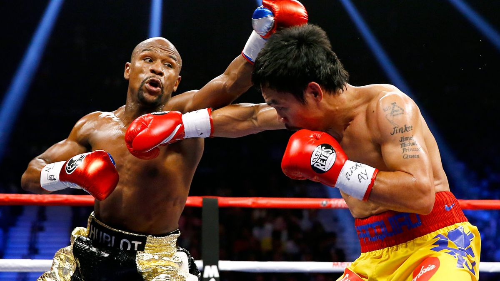

Info
Where It began
Boxing was introduced In the ancient Olympic games of the 7th
century. Leather thongs were used as the boxing gloves for the
competitors. Over the years the gloves have evolved.
Hover over the image of the vintage
boxing gloves to compare them to a modern pair.
Important Rules
There is no hitting below the belt, holding, kicking
pushing, and headbutting allowed. You cannot puch your
opponent in the back or neck. If a boxer is knocked out of
the ring he has 20 seconds to get back in the ring. Only the
referee can stop a match. A boxer that is knocked down has ten
seconds to get up before being considered knocked out. Rounds
last for 3 minutes. In professional
boxing matches can go up to 12 rounds.
Scoring System
The scoring system in boxing is known as the ten point
system. In this system, Judges score each boxer on a ten point
system. Most of the time boxers will receive a 10 or a 9, with
the most dominant boxer receiving a 10. If a boxer is knocked down
a point is lost. Judges can also take away points for intentional
or unintentional fouls. This usually only happens after a warning. The main thing judges tend to look for are Effective Aggression, how well a boxer is able to enforce his will on his opponent, defense,
and Clean punches ( punches that are not blocked or deflected)..
